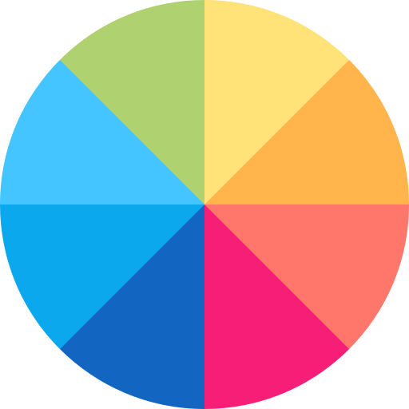

<div class="whiteboard-container">
  <canvas-whiteboard
    #canvasWhiteboard
    [options]="canvasOptions"
    (onBatchUpdate)="onCanvasDraw($event)"
    (onClear)="onCanvasClear()"
    (onUndo)="onCanvasUndo($event)"
    (onRedo)="onCanvasRedo($event)"
  >
  </canvas-whiteboard>
</div>
<color-hue-picker class="hue-picker" width="100%" [color]="hueColor" (onChangeComplete)="hueChangeComplete($event)"></color-hue-picker>
<color-shade-picker class="shade-picker" width="100%" [color]="shadeColor" (onChangeComplete)="shadeChangeComplete($event)"></color-shade-picker>
<ion-content>
  <ion-fab vertical="bottom" horizontal="end" slot="fixed">
    <ion-fab-button (click)="openColorPicker()">
      
    </ion-fab-button>
  </ion-fab>
</ion-content>
